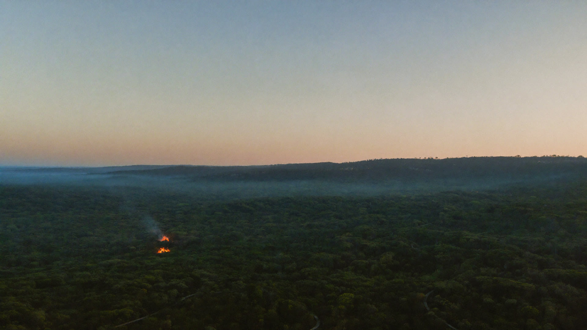
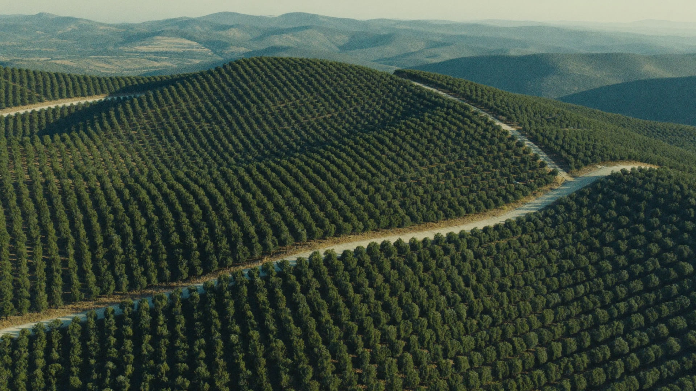
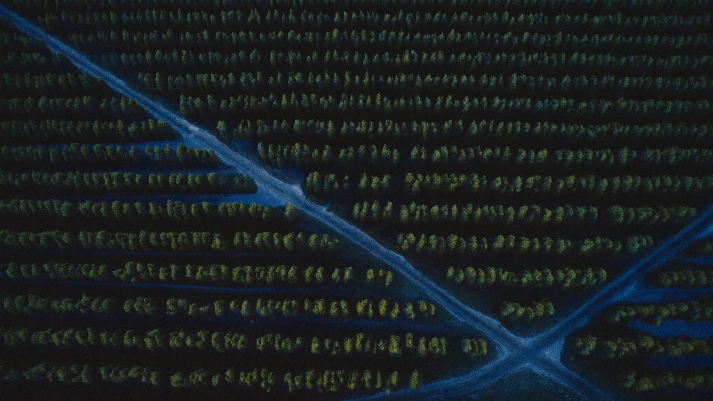
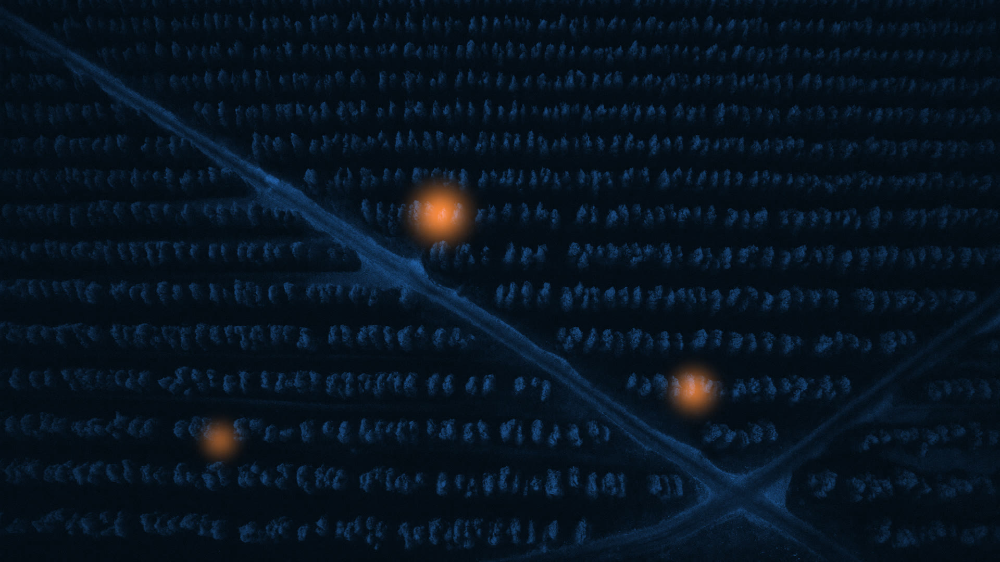
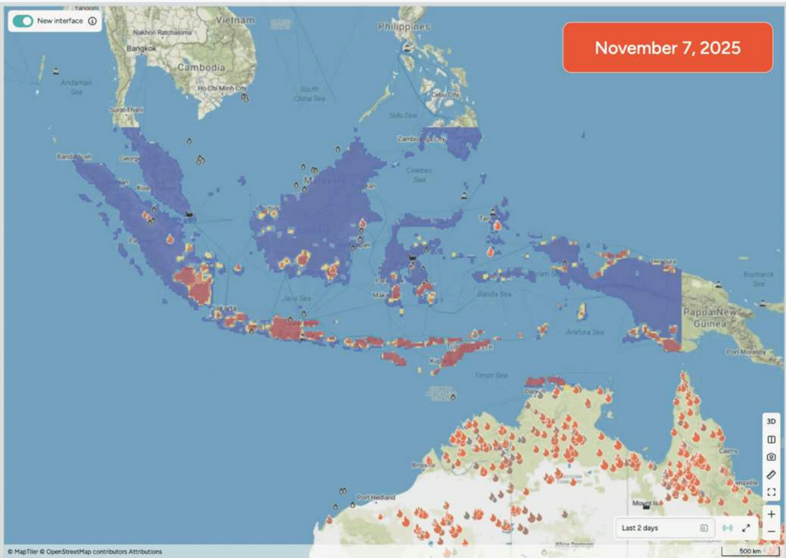
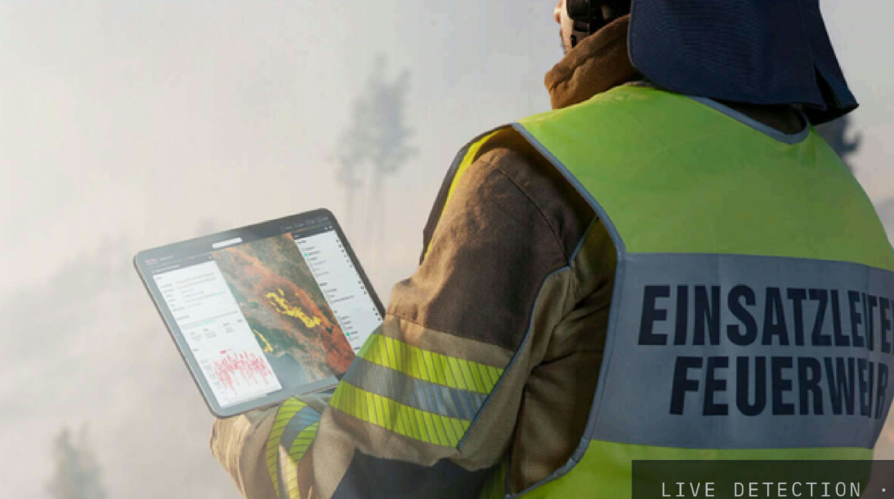
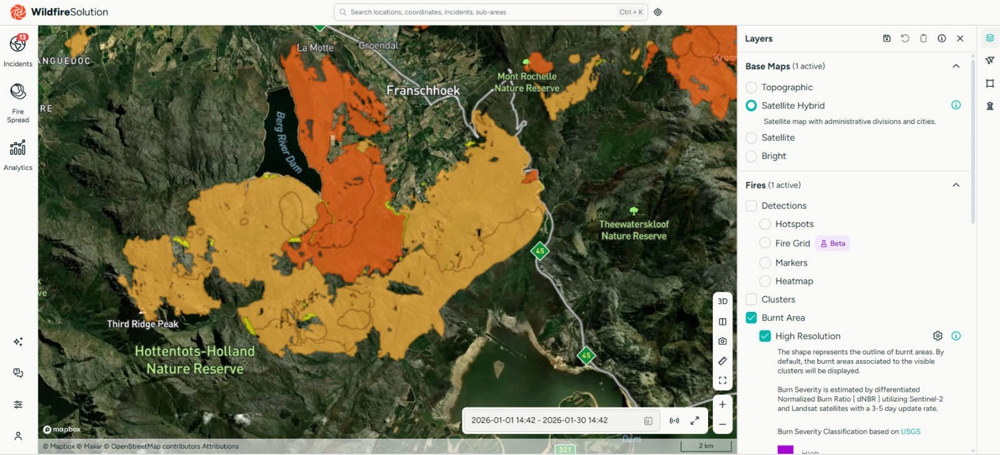
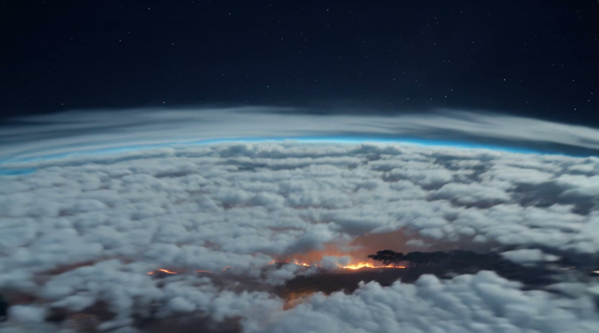

Lookout towers
Good at: a trained spotter reading smoke against a skyline they know by heart.
Cannot cover: anything behind a ridge, anything past the horizon, and every hour the tower is unmanned.
Detect It In Minutes, Not From A Smoke Column.
A Tower Sees Where It Is Pointed.
A Sensor Sees Where You Put It.
Official Reseller Of
We See All Of It.
Thermal wildfire detection from orbit, across your whole estate, every hour of every day.
Official Reseller Of
We See All Of It.
Thermal wildfire detection from orbit, across your whole estate, every hour of every day.
Book a live demo80%
of South Africa's commercial timber loss is fire
53M ha
burnt across Africa in the first half of 2025
4 × 4 m
the smallest fire the constellation detects
COVERAGE
Towers and sensors are good at what they cover. The question is what is left over. On most estates, that is nearly all of it.
Good at: a trained spotter reading smoke against a skyline they know by heart.
Cannot cover: anything behind a ridge, anything past the horizon, and every hour the tower is unmanned.
Good at: watching a fixed viewshed automatically, day and night, with no one sitting in the tower.
Cannot cover: still only what the mast can see, and every ridge you want covered needs its own mast, power and signal.
Good at: catching a fire early in the exact stand where the sensor sits.
Cannot cover: the ground you did not instrument, which on a large estate is most of it.
Good at: watching the entire estate at once, through smoke and cloud, day and night.
Honest limit: it sees heat, not intent. It tells you where and when. Your people still decide what to do.
IN SERVICE

Nearly two million hectares of bushveld, most of it hours from the nearest road. Coverage is not a feature there. It is the only way the ground gets watched at all.

Miombo woodland across borders, monitored from the same constellation and the same platform.

Standing timber is a crop that burns. Detection here is measured against the value of a compartment.
Thanks to OroraTech we are able to monitor the wildfires as well as gather the information needed to analyse their spatio-temporal pattern, which is a very important component for designing an integrated fire management plan.
THE PLATFORM BEHIND US
You deal with us in Ballito. What you are buying into is OroraTech, whose platform runs in 25 countries and watches half a billion hectares.
Source: OroraTech, August 2026
TRY IT
This is a plantation at night, in ordinary light. Press and hold, and look again.


--.----° S --.----° E4 10 × 10 mtimes; 4 m0 min ago
Three heat signatures. None of them visible from the road.
THE PLATFORM

01
Nine days of fire danger ahead, with wind, temperature, humidity, lightning and fuel moisture on the same map.
SHORT-TERM FIRE HAZARD FORECAST

02
Over 35 satellite sources, several passes an hour, filtered for false positives, down to fires 4 by 4 metres.
LIVE DETECTION IN THE FIELD

03
Where the front is likely to run next, up to 24 hours ahead, from the weather, the terrain and the fuel it is moving through.
FIRE SPREAD MODEL · STELLENBOSCH TO FRANSCHHOEK

04
Burn scar and severity mapping, five severity classes, delivered automatically two to three days after the fire is out.
BURNT AREA · HIGH RESOLUTION
THE FIRST HOUR
Thermal infrared, through smoke and cloud, several times an hour.
Algorithms strip out the flare stacks, the hot roofs and the sun glint before anyone is woken up.
WhatsApp, SMS, email or in app, within minutes, only for the areas you monitor.
Location, estimated size, and the terrain around it.
To a place, not a rumour.
WHO THIS IS FOR
Standing timber, compartment by compartment.
Wildfire detection for plantationsLarge, remote, and mostly unwatched at night.
Wildfire monitoring for reservesLong thin assets nobody can patrol end to end.
Fire detection for power networksShared awareness across members and boundaries.
Detection for municipalities and FPAsIndependent evidence of what burned, and when.
Burn mapping for insurersWHY US
Our customers are supported by OroraTech and by Optimum Geomatics here in South Africa. Same constellation, same platform, with people you can actually reach.

BOOK A LIVE DEMO
Send us the estate. We will run the platform over your actual coordinates and show you what the last fire season looked like from orbit.